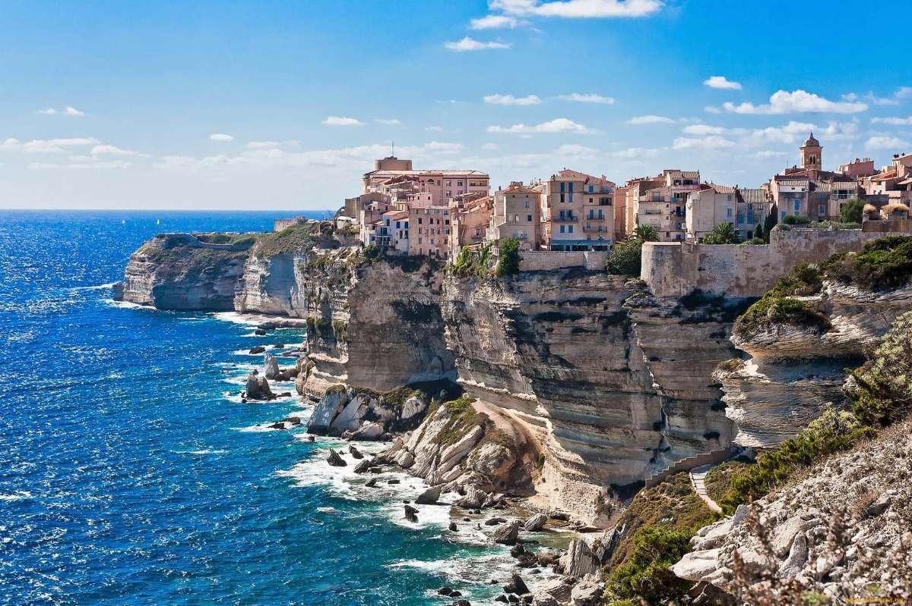
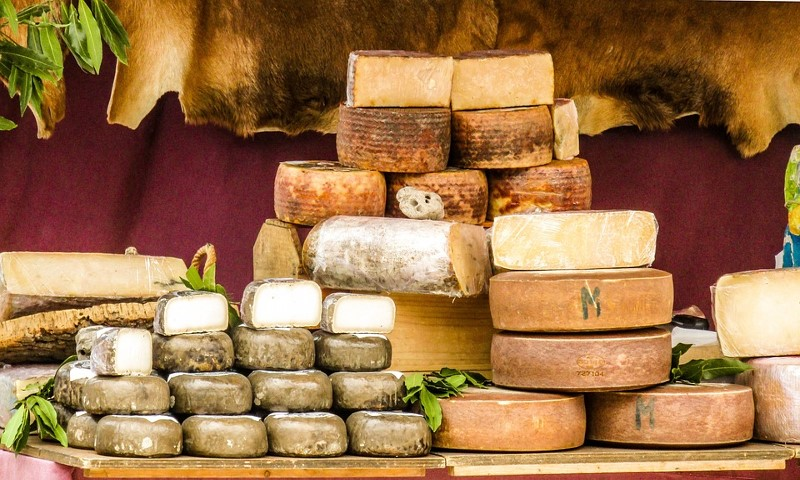
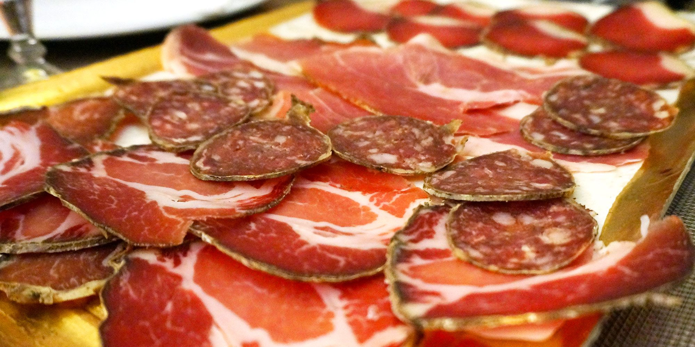
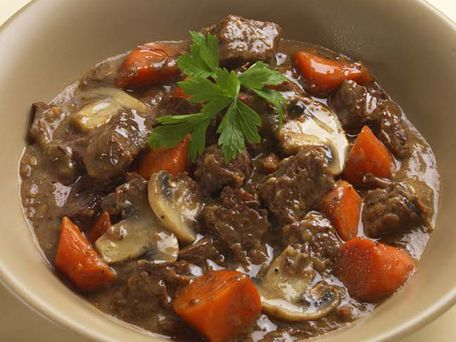
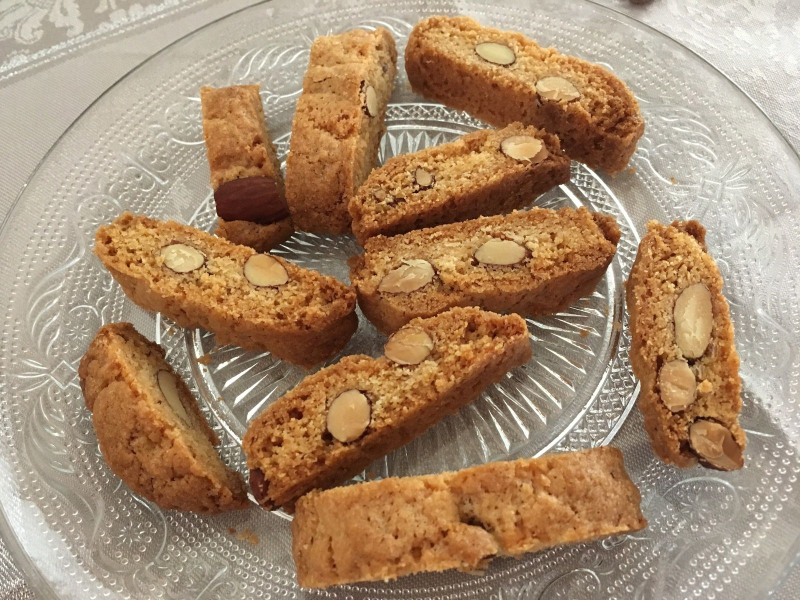
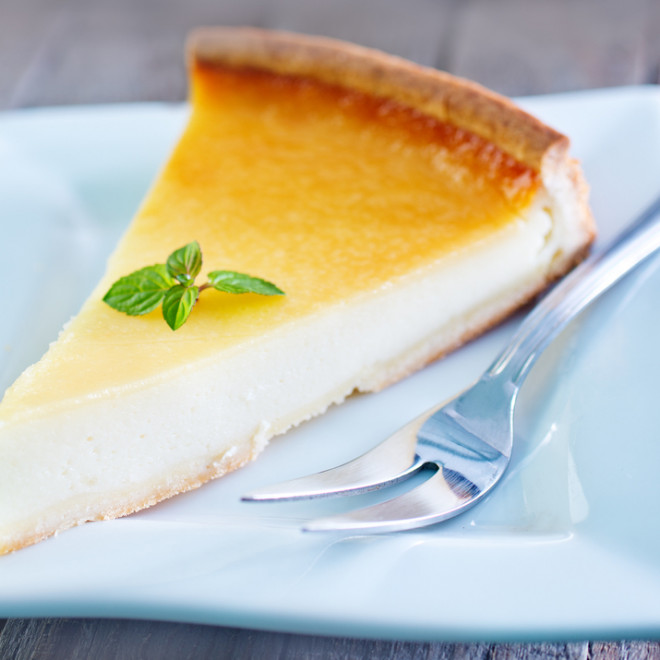
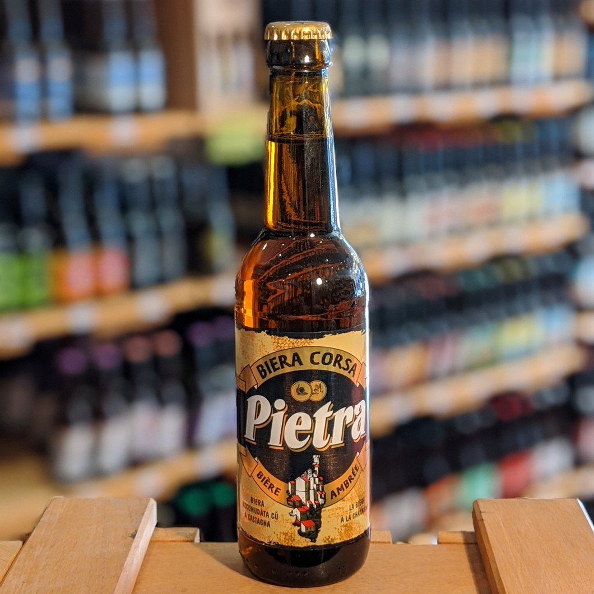
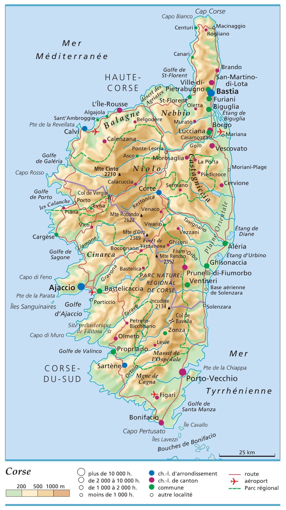

La Corse
Tout savoir sur l'île de beauté
Quelques lieux incontournables
Calanques de Piana
Découvrir !
Le Cap Corse
Découvrir !

Bonifacio
Découvrir !
Focus sur les spécialités culinaires
Le fromage

La charcuterie

Le civet de sanglier

Les canistrelli

Le fiadone

La pietra

Carte de la Corse
